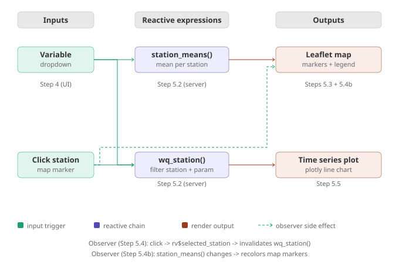

What are data dashboards and when should you build one?
Section 1 — Framing
What is a data dashboard?
An interactive interface that connects a user to a dataset, letting them explore, filter, and interrogate the data without writing code.
Build a dashboard when…
The audience needs to explore, not just read
The data updates over time
Different users need different views of the same data
Spatial or temporal context matters
Prefer a static report when…
Findings are fixed and narrative-driven
The audience is not expected to interact
Long-term archiving is the priority
The figure will appear in print
Section 1 — Framing
Know your audience before you build
Exploratory
Scientists and analysts who want to dig into the data themselves. Needs flexible filtering, raw data access, and download options.
Operational
Managers or field staff who need current status at a glance. Needs simplicity, clear alerts, and fast load times.
Communicative
Public or policy audiences who need a clear story. Needs guided narrative, minimal controls, and polished visuals.
The same dataset often needs three completely different dashboard designs depending on who is sitting in front of it.
Section 2
Tool Landscape
Choosing the right tool for the job
Section 2 — Tool Landscape
Overview of dashboard tools
R Shiny
Full reactive web app in R. Excellent for spatial data, custom layouts, and tight integration with R analysis workflows. Requires a server to share.
Plotly / Dash
Python or R. Great for interactive charts and quick deployment. Dash adds a full app framework on top of Plotly.
Google Earth Engine Apps
Purpose-built for satellite imagery and planetary-scale geospatial data. Free hosting, but locked into the GEE ecosystem and JavaScript API.
Observable / Quarto / Shinylive
Serverless options that run entirely in the browser — no server required. Shinylive compiles R to WebAssembly; Observable and Quarto use JavaScript. All make tradeoffs on package support and data size.
See also: Flexdashboard (R) · Streamlit (Python) · Bokeh (Python) · Tableau (GUI) · Power BI (GUI) · Grafana (GUI)
Section 2 — Tool Landscape
How to choose
Language — use what your team already knows
Data size — browser or server?
Sharing — permanent URL, demo, or embedded?
Interactivity — simple filters or complex reactivity?
Maintenance — who owns it after you build it?
Today’s focus: R Shiny
Best fit for research audiences already working in R, complex spatial data, and dashboards that need to stay in sync with live or updating datasets.
Note: Shiny is also available for Python — the syntax and concepts are nearly identical.
Section 3
Sharing Paradigms
From localhost to the cloud and everywhere in between
Section 3 — Sharing Paradigms
The sharing spectrum
Local
Static
Serverless
Tunneled
Cloud
Institutional
Container
Self-hosted
Complexity, infrastructure requirements, and cost increase left to right.
Low barrier: Local and static options require zero infrastructure — just your machine or a simple file host.
Full control: Container and self-hosted options give maximum flexibility but require you to own and maintain the infrastructure.
Section 3 — Sharing Paradigms
Comparing your options
Option
Cost / Staff
Complexity
Who can access / limitations
Local
Free, no staff
None
Developer only, on their machine
Static HTML (GitHub Pages)
Free, no staff
Minimal
Anyone with URL, no server-side computation
Serverless (Shinylive, Observable, Quarto)
Free, no staff
Build step
Anyone, but data must be bundled and packages are limited
Tunneled (ngrok)
Free tier
Some setup required
Anyone with URL, temporary — app dies when laptop closes
Cloud (shinyapps.io, Plotly, AWS)*
Free tier / paid
Deploy step
Anyone, permanent URL, compute limits vary by platform
Institutional (Posit Connect, Shiny Server)*
Free to user
IT dependency
Network / VPN access, depends on IT setup
Container (Docker)
Hosting cost + setup time
DevOps knowledge required
Anyone, full control over environment
Self-hosted
Server + ongoing staff
Full stack
Anyone, maximum control and flexibility
Green = favorable · Yellow = moderate tradeoff · Red = significant constraint
*Python equivalents include Streamlit Community Cloud (cloud) and Voila / JupyterHub (institutional)
Section 3 — Sharing Paradigms
Local, static & tunneled
1. Local (localhost)
Default when you click Run App in RStudio. Only accessible on your machine. Zero setup. Good for development and testing.
2. Static HTML (GitHub Pages)
Pre-built HTML file with embedded JavaScript. No server needed. Interactivity limited to reorganizing pre-loaded data — no runtime computation.
3. Tunneled — ngrok
Creates a public URL that forwards to your locally running app. Your computer does all the computation — ngrok just tunnels whatever is running on that port. Free tier gives a temporary URL that changes each session.
# One-time setup ngrok config add-authtoken TOKEN
# Each session ngrok http 4533
# Share this URL: https://abc123.ngrok-free.app
Works for any framework — Shiny, Streamlit, Flask, or anything else running on that port.
Section 3 — Sharing Paradigms
Cloud hosted & serverless
4. Cloud hosted — shinyapps.io
Permanent public URL. Runs independently of your laptop. Free tier: 5 apps, 25 active hours/month. One command to deploy.
5. Serverless — Shinylive, Observable, Quarto
All run entirely in the browser with no server required and can be hosted on GitHub Pages for free. Unlike static HTML, Shinylive can execute real code on demand in the browser. Shared tradeoffs: all data must be bundled with the app, large datasets are not practical, and package support is limited.
# Deploy to shinyapps.io library(rsconnect) rsconnect::deployApp()
# Your app gets a URL like: yourname.shinyapps.io/appname
Section 3 — Sharing Paradigms
Other sharing options
6. Container — Docker
Packages the app and its entire application environment into a container that runs identically anywhere. Solves the “works on my laptop” problem.
7. Institutional server
Many universities run Shiny Server, Posit Connect, or JupyterHub. Common when data cannot leave the institution. Contact your research computing group.
8. Self-hosted
You own the server, the infrastructure, and the maintenance. Maximum control and flexibility. A raw VPS with your own application process and web server.
Once hosted, your app can also be embedded in any webpage via an iframe.
Section 4
Large Data Considerations
What happens when your data outgrows the browser
Section 4 — Large Data
Browser rendering limits
Browsers render everything as pixels in memory — a 30m nationwide raster is gigabytes before it reaches the screen
Leaflet limits raster file sizes for a reason — large images will fail to render or crash the browser
Large vector datasets with millions of points or complex polygons also slow the browser
Rule of thumb: if the file is over ~5MB, you need a strategy
Strategies
Aggregate on the server before sending to the client
Simplify geometries with st_simplify()
Downsample rasters with aggregate()
Use a tile server or COG
Section 4 — Large Data
Large Raster Handling
A tile server pre-slices a raster into 256×256px tiles at multiple zoom levels. The browser only fetches tiles for the current viewport — never the whole image at once. This is exactly how Google Maps and satellite basemaps work.
Options in R / open source
COG — Cloud Optimized GeoTIFF. No server needed — the file itself is structured so clients fetch only the bytes they needZarr — Cloud-native chunked array format ideal for multidimensional data (time × lat × lon). Like COG but for raster time series. Used by ERA5, CMIP6, and other major climate datasetstitiler — modern cloud-native tile serverGeoServer — full-featured open source tile servergdal2tiles — pre-generate static tile directories
Today’s workshop
We use a coarse-resolution NLCD raster (~150m) that fits within Leaflet’s limits. This keeps setup simple while demonstrating the same raster-vector query concepts you would use with a tile-served layer.
Section 4 — Large Data
Large Vector Handling
Simplify before it hits the browser
Reduce vertex count with st_simplify() — usually invisible to the eye, dramatically faster to render.
Aggregate spatially — send county summaries, not parcel-level detail.
Efficient vector formats
FlatGeobuf — like COG for vectors. HTTP range requests fetch only the extent needed. No server, just a static file.
PMTiles — vector tiles in a single file, hostable on S3 or GitHub Pages.
GeoParquet — columnar spatial storage, fast for attribute queries.
Section 4 — Large Data
Large Tabular Data
When your dataset is too large to load into memory, or you have millions of rows to render as points, you need tools designed for that scale.
Query instead of load
DuckDB — runs SQL on large Parquet or CSV files directly in your analysis environment. Send only the query result to the browser.
Apache Parquet — columnar format, far faster than CSV for reading subsets. Pairs naturally with DuckDB.
Render at scale
Datashader (HoloViz) — renders millions of points as a rasterized heatmap rather than individual markers. Handles genuinely massive datasets.
DeckGL / Observable Plot — GPU-accelerated rendering of large point clouds directly in the browser.
Section 5
R Shiny Syntax & Concepts
The vocabulary you need before you open RStudio
Section 5 — R Shiny
Every Shiny app has two parts
UI — the layout
Sets the layout and appearance of the app. Defines input widgets users can interact with and output placeholders the server fills in. Evaluated once at startup — no data, no logic, no computation.
The ID "map" in the UI must exactly match output$map in the server.
Section 5 — R Shiny
Reactivity: the engine of Shiny
reactive()
Computes and caches a derived value. Re-runs automatically when its inputs change.
Filters water quality data to the selected parameter and date range
observeEvent()
Triggers a side effect when an event fires. Returns nothing.
When you click a station marker, stores that station as the selected one
render*()
A special reactive wired to a UI output placeholder. Produces visible output.
Draws the time series plot for the selected station and parameter
When an input changes, Shiny automatically re-runs every expression that depends on it — and only those expressions. Dependencies are tracked automatically; you never declare what depends on what.
The chain in action:
Click a marker → observeEvent stores the station → reactive filters its data → renderPlotly draws the plot
Section 5 — R Shiny
Reactive linkages in mini_app.R

Resources & links
Clickable links for tools and resources covered in this workshop, organized by ecosystem. This is not an exhaustive list — the dashboard and geospatial ecosystems are large and evolving rapidly.